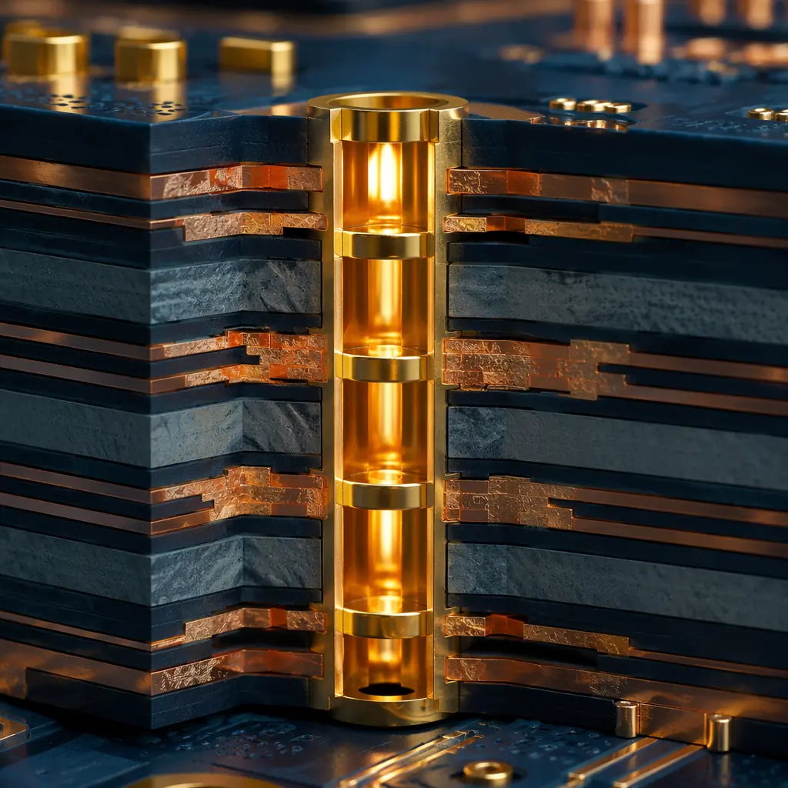
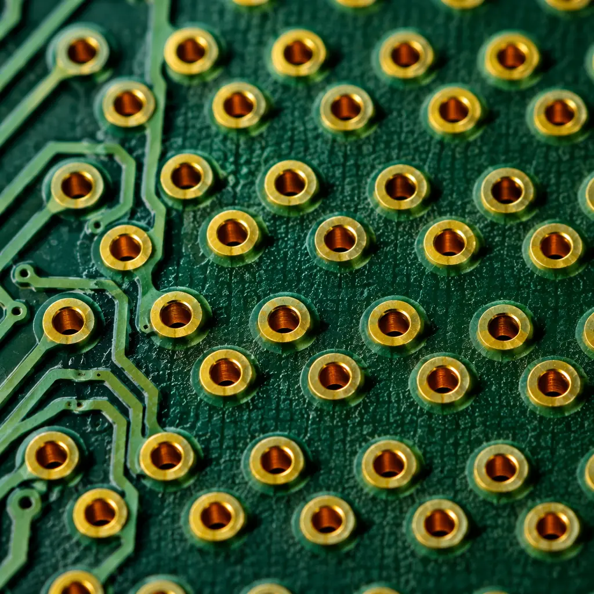
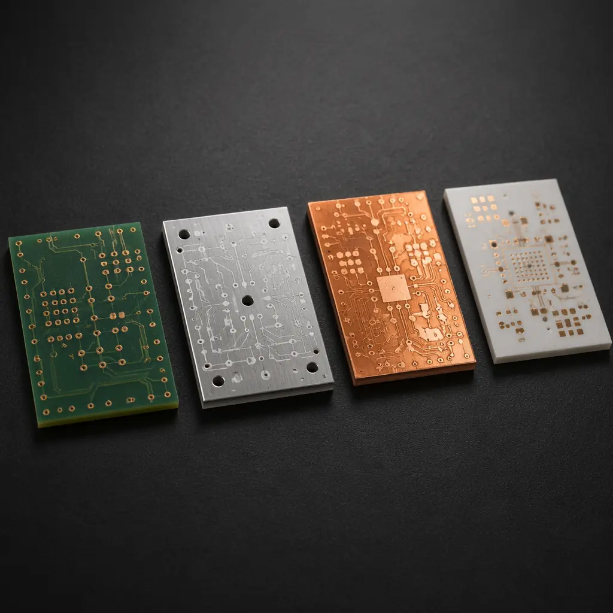

Heat is the silent killer of electronic assemblies. For every 10°C rise in junction temperature, semiconductor lifetime halves — that is the Arrhenius equation in practice, not theory. Yet thermal management is often treated as an afterthought, delegated to a mechanical engineer who adds a heatsink at the final design review. The PCB itself is your first and most cost-effective thermal solution. Get the board right, and you may not need exotic cooling at all.
At Huaxing PCBA, we manufacture boards that dissipate anywhere from milliwatts in IoT sensors to hundreds of watts in power converters and LED arrays. Our facility handles up to 32 layers with thermal via arrays as dense as 1.0mm pitch, across 8 SMT lines. This guide condenses what our engineering team reviews daily — from substrate selection to copper balancing — into actionable design rules you can apply immediately.

Why Heat Kills Boards: The Physics Every Designer Should Know
Before diving into design rules, understand the three heat-transfer mechanisms at play inside a PCB — and which one dominates in your application.
Conduction — Your Primary Tool
Heat moves through solids from hot to cold. In a PCB, conduction happens through copper traces, planes, and vias. Copper has a thermal conductivity of approximately 400 W/m·K — roughly 1,300 times better than standard FR-4 (~0.3 W/m·K). This is why copper pours and thermal vias work: they create low-resistance paths that funnel heat away from hot spots. The dielectric layers between copper planes are the bottleneck — a 0.2mm FR-4 prepreg offers about 0.06 W of heat transfer per square centimeter per degree of temperature difference. Every thermal via you add punches through that bottleneck.
Convection — Natural or Forced
Heat transfers from the board surface to surrounding air. Natural convection (no fan) typically removes 5–15 W from a 100×100mm board at a 40°C temperature rise. Forced air (fan at 2 m/s) can triple that. Surface area is everything: exposed copper pads, thermal lands, and even the board orientation affect convection efficiency. A board mounted vertically dissipates 20–30% more heat than one lying flat.
Radiation — Often Overlooked
At PCB operating temperatures (60–120°C), radiation contributes 10–25% of total heat dissipation. Solder mask emissivity is surprisingly high — around 0.85–0.92 — meaning a bare PCB surface radiates effectively. Bare copper, by contrast, has an emissivity of only 0.03–0.07. This is why removing solder mask from thermal pads can actually worsen cooling: you lose radiative efficiency. Keep solder mask on unless you are attaching a heatsink.
Design Rule: For every watt of power dissipated on your board, allocate at least 6.5 cm² of copper area (1 oz, single-sided) to keep temperature rise below 40°C with natural convection. Double-sided copper halves the required area. This is a rule of thumb validated across hundreds of power-supply designs — use it for early-stage PCB sizing before running thermal simulation.
Thermal Via Arrays: Sizing, Spacing, and Fill Options
Thermal vias are the most direct way to move heat from a component pad to an internal or bottom-side copper plane. But vias are not free — they consume routing space and add cost. Getting the array design right means balancing thermal performance against manufacturability.
Via Diameter: 0.3mm Is the Sweet Spot
A 0.3mm drill (0.2mm finished) via provides the best ratio of thermal conductance to board real estate. Smaller vias (0.2mm drill) add cost without meaningful thermal benefit — the copper barrel wall is thinner, and the hole is more likely to be starved of plating. Larger vias (0.5mm+) consume too much pad area and can wick solder away from component pads during reflow. For most designs, use 0.3mm drill / 0.6mm pad thermal vias at 1.0–1.2mm pitch.
Array Geometry: Grid Beats Perimeter
Placing vias in a grid pattern directly under the thermal pad outperforms a perimeter ring by 30–40% in junction-to-ambient thermal resistance. A 3×3 grid (9 vias) under a QFN thermal pad can reduce θJA from 45°C/W to under 28°C/W on a 4-layer board. Extend the array slightly beyond the pad edges — copper spreads heat laterally before the vias carry it down, so the effective heat-collection radius is the pad size plus roughly one board thickness in each direction.
To Fill or Not to Fill
Unfilled vias work for most applications. But if the via is under a component pad that will be soldered, via-in-pad must be filled and capped — otherwise solder wicks down the via barrel, starving the joint. Conductive epoxy fill (∼8 W/m·K) adds marginal thermal benefit over air (∼0.026 W/m·K). Non-conductive fill prevents solder wicking and costs less. For designs under 10W dissipation, unfilled vias with a solder mask dam between the via and pad are sufficient. See our PCB via technology guide for via-type selection across all applications.
Connect to Every Copper Layer
A thermal via that connects only to the top and bottom layers wastes the internal copper planes. Each internal plane connection adds a parallel thermal path. On a 6-layer board, connecting a via to all 6 copper layers can reduce thermal resistance by 40–55% compared to connecting only top and bottom. Most PCB design tools default to connecting vias to all layers — do not override this for thermal vias. The one exception: if an internal layer is a signal layer with tight impedance control, thermal relief spokes may be needed to prevent the via from acting as a heatsink for that trace during soldering.

Copper Pour and Plane Strategies for Heat Spreading
Copper is your cheapest thermal management material — it comes free with every layer. The key is using it strategically.
Solid Planes vs. Hatched Pour
For thermal performance, solid copper planes are 3–5× more effective than hatched patterns at the same copper weight. A 1 oz solid plane spreads heat nearly isotropically; a 50% hatched plane creates preferred conduction paths along the hatch lines. Use solid pours on dedicated thermal layers. Reserve hatching for impedance-controlled layers where a solid plane would add too much capacitance. Our PCB stackup design guide shows how to position thermal planes within the layer count for maximum effectiveness.
Copper Weight: 2 oz Is the New Default for Power Boards
Moving from 1 oz (35µm) to 2 oz (70µm) copper roughly halves the lateral thermal resistance. For power converters, motor drivers, and LED drivers above 15W, specify 2 oz copper on outer layers as a baseline. Inner layers can stay at 1 oz unless the design calls for heavy-copper throughout — our heavy copper PCB guide covers designs requiring 4 oz and above for extreme current and thermal loads.
Thermal Spokes and Relief Connections
Standard thermal relief spokes (4-spoke, 0.25mm width) add approximately 15–25°C/W of thermal resistance per pad. For power components (MOSFETs, diodes, LDOs), use direct connections (no thermal relief) to the copper plane. The trade-off is soldering difficulty — the plane acts as a heatsink during reflow. If your assembly process uses a controlled reflow profile with extended soak time, direct connections are manageable. For hand-soldered prototypes, keep relief spokes and accept the thermal penalty.
Procurement Tip: When specifying 2 oz copper on a 4+ layer board, confirm with your manufacturer that they can plate 2 oz on outer layers while maintaining minimum annular ring requirements on 0.3mm vias. Some shops need to start with 1 oz base foil and plate up, which can reduce via reliability if not controlled properly. Huaxing PCBA's plating line holds ±10% copper thickness tolerance across the panel — request a cross-section report for first articles.
Substrate Material Selection: Thermal Conductivity Comparison
When copper pours and thermal vias are not enough, the substrate itself becomes the variable. Here is how common PCB base materials compare for thermal performance.
| Material | Thermal Conductivity (W/m·K) | Tg (°C) | Best Application | Relative Cost |
|---|---|---|---|---|
| Standard FR-4 | 0.25–0.35 | 130–140 | Low-power digital, consumer | 1× |
| High-Tg FR-4 | 0.35–0.45 | 170–180 | Automotive, industrial control | 1.3× |
| Thermally Conductive FR-4 | 1.0–2.2 | 140–170 | LED lighting, mid-power | 2.5× |
| Aluminum Core (IMS) | 1.0–3.0 | N/A (metal base) | LED arrays, power supplies | 2–3× |
| Copper Core | 380–400 | N/A (metal base) | RF power amps, extreme heat | 5–8× |
| Ceramic (Al₂O₃) | 20–30 | >1,000 | High-temp, aerospace, RF | 10–20× |
| Ceramic (AlN) | 140–180 | >1,000 | High-power LED, laser diode | 15–30× |

The jump from standard FR-4 to aluminum-core (IMS) delivers a 4–10× improvement in through-plane thermal conductivity for roughly double the board cost. For LED arrays dissipating more than 5W on a single board, aluminum-core is almost always the correct economic choice — the savings from eliminated heatsinks typically pay for the substrate upgrade within the first production run. Our metal-core PCB guide covers IMS design rules in detail, including dielectric layer thickness trade-offs.
Design Rules for Thermal Relief in High-Power Boards
These are the non-negotiable rules our engineering team applies to every power board review.
Copper Balance: Keep Layer Pair Symmetry Within 10%
Uneven copper distribution across layers causes warpage during reflow — and warped boards have inconsistent thermal contact with heatsinks. For a 4-layer board, if layer 1 has 65% copper coverage, layer 4 should be within 55–75%. Add copper thieving (dummy fills) to sparse layers to maintain balance. This is as much a thermal rule as a mechanical one: a flat board transfers heat to a heatsink evenly; a warped board creates air gaps that act as insulators.
Component Placement: Cluster by Power Density, Not Function
Placing a 5W DC-DC converter next to a temperature-sensitive ADC creates a thermal gradient across the chip that degrades accuracy. Instead, group high-power components (>1W) together on one side of the board, place medium-power components (0.2–1W) in the middle, and keep sensitive analog and precision components as far from heat sources as board dimensions allow. This is called thermal zoning, and it is far more important than grouping components by functional block.
Board Thickness Matters for Through-Plane Heat Transfer
A thinner board transfers heat through the dielectric layers more efficiently. Moving from a standard 1.6mm board to 1.0mm reduces through-plane thermal resistance by approximately 37%. For designs with bottom-side heatsinks, 1.0mm or even 0.8mm thickness substantially improves cooling. The trade-off is mechanical rigidity — for boards larger than 100×100mm at 1.0mm thickness, add mounting points at ≤50mm spacing to prevent flexing. See our PCB materials guide for substrate mechanical properties across thickness grades.
Verify Your Stackup with Impedance and Thermal Co-Simulation
High-speed designs add complexity: the same copper planes that spread heat also determine characteristic impedance. A design optimized purely for thermal performance may violate impedance control requirements. The solution is not to compromise — it is to co-simulate. Modern tools (SIwave, HyperLynx Thermal) can model both signal integrity and thermal performance on the same stackup. For mixed-signal power boards, budget 2–3 extra days in the design cycle for this co-simulation step. It catches problems like a power plane that meets thermal requirements but creates a 15Ω impedance discontinuity at the via transition — a board that works thermally but fails signal integrity is still a failed board.
Key Takeaway: The most common thermal failure we see in customer designs is not insufficient cooling — it is uneven cooling. A single hotspot at 125°C surrounded by board area at 65°C creates mechanical stress that delaminates the dielectric over time. Spread the heat. Use copper pours to create large, continuous thermal paths rather than narrow traces that concentrate heat flux. A 50mm-wide copper pour does more for reliability than ten 5mm traces carrying the same total power.
When to Move Beyond Standard PCBs: Power Electronics Thermal Design
There is a threshold where copper pours and thermal vias on FR-4 stop being enough. Recognizing that threshold early saves redesign cycles.
For power electronics PCB designs exceeding 20W total board dissipation, the conversation shifts from "how do I cool this board" to "what substrate and stackup can handle this thermal load." At this power level, consider:
Insulated Metal Substrate (IMS) for Single-Layer Power Boards
Aluminum-core PCBs eliminate the FR-4 dielectric bottleneck entirely. The dielectric layer between copper and aluminum base is only 75–150µm thick (vs. 200µm+ for FR-4 prepreg), providing 5–10× better through-plane conductivity. IMS boards are single-layer by design (though 2-layer IMS exists with cost premiums). For LED drivers, DC-DC converters, and motor controllers under 100W, IMS is almost always the correct substrate choice.
Heavy Copper for Multi-Layer Power Distribution
When you need both thermal management and complex routing (multi-layer with blind/buried vias), heavy copper PCBs with 4–10 oz copper on inner layers combine current capacity with heat spreading. A 4 oz inner plane can carry 35A with a 20°C temperature rise over a 25mm width — and simultaneously spread 15W of heat from a processor on the top layer across the entire board area.
Embedded Coin Technology for Concentrated Hotspots
For designs where 90% of the heat comes from one component (a GaN FET, a laser diode, a high-power LED), embedded copper coins provide a direct thermal path from the component pad to a bottom-side heatsink. A 5mm-diameter copper coin embedded in the PCB under a component can achieve θJC below 1°C/W — an order of magnitude better than the best thermal via array. This is a specialty manufacturing process; discuss with your fabricator early in the design phase, as coin placement affects layer registration and pressing parameters.
Working with Your PCB Manufacturer on Thermal Design
Thermal design is not a solo activity. The manufacturer's process capabilities directly constrain your thermal design choices — and a good manufacturer will catch problems your simulation missed.
Submit Thermal Requirements with Your Gerber Package
Most designers send Gerber files and a fabrication drawing. For thermal-critical designs, add a thermal requirements sheet: identify hotspot components with expected power dissipation, specify target θJA for critical parts, and note any copper-weight or via-fill requirements. Our engineering team reviews thermal specs alongside DFM checks — we have caught via arrays that were electrically correct but thermally insufficient because the vias did not connect to the right internal planes.
Request a Cross-Section for Thermal Via Quality
Thermal vias work only if the copper barrel is intact. A cross-section report — standard for IPC Class 3 builds — verifies plating thickness and barrel integrity. For thermal vias, the minimum acceptable barrel thickness is 20µm (IPC Class 2) but 25µm is recommended for designs with thermal cycling above 50°C swing. A thin or cracked barrel adds thermal resistance that no amount of simulation can predict.
Use Thermal Imaging for First-Article Validation
Simulation is an estimate; thermal imaging is ground truth. For production runs, request thermal imaging of the first article under load. A FLIR or similar IR camera image taken at steady state can reveal hotspots that simulation missed — a component with higher-than-expected contact resistance, a via array with plating voids, or a copper pour with unexpected necking. The cost is approximately $200–400 per first article and it catches problems before they reach 1,000-unit production. Our PCB testing methods guide covers thermal validation alongside electrical test procedures.
Thermal management is not a feature you add to a finished design — it is a constraint you design around from layer one. The difference between a board that runs at 85°C and one that runs at 105°C is rarely a heatsink; it is the thermal via array under the regulator, the 2 oz copper plane that should have been specified in the stackup, and the aluminum-core substrate that the BOM cost analysis rejected without calculating the warranty-return savings.
At Huaxing PCBA, we build boards that manage heat from the substrate up — from standard FR-4 with optimized via arrays to aluminum-core IMS with embedded copper coins. Our engineering team reviews every thermal-critical design before fabrication begins, matching substrate selection and copper distribution to your application's actual power profile rather than generic design rules. Contact our engineering team with your Gerber files and thermal requirements for a design review, or read our supplier audit guide to evaluate whether your current fabricator is meeting thermal quality standards.